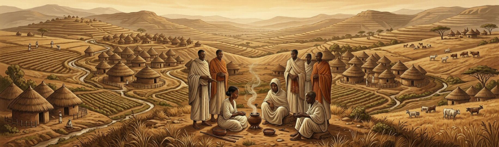

Historia del café
La historia del café se remonta al siglo IX en las tierras altas de Etiopía, donde según la leyenda, un pastor llamado Kaldi descubrió los efectos estimulantes de los granos de café al observar cómo sus cabras se volvían más enérgicas después de comer las bayas rojas de un arbusto. Este descubrimiento accidental dio inicio a una de las tradiciones más importantes de la humanidad.
